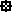

Museum Uranbergbau Schlema
Useful Information
| Location: | At Schlema. (50°35'58.98"N, 12°40'28.00"E) |
| Open: |
All year Tue-Fri 9-17, Sat-Sun 10-16. Closed Christi Himmelfahrt, Buß- und Bettag, 24-DEC, 31-DEC. [2012] |
| Fee: |
Adults EUR 3, Children 1,50, Disabled EUR 2, Overnight guests EUR 2. [2012] |
| Classification: | Uranium Mine |
| Light: | electric |
| Dimension: | |
| Guided tours: | |
| Photography: | |
| Accessibility: | |
| Bibliography: | |
| Address: |
Museum Uranbergbau, Bergstraße 22, 08301 Schlema, Tel: +49-3771-290223, Fax: +49-3771-290216.
E-mail: |
| As far as we know this information was accurate when it was published (see years in brackets), but may have changed since then. Please check rates and details directly with the companies in question if you need more recent info. |
|
History
| 22-JUL-1996 | museum opened on the 8. Deutscher Bergmannstag (8th German Miners Day). |
Geology
Description
The village of Oberschlema has an extraordinary spring, which contains the radioactive element radium. Actually the springs are the worlds most concentrated radium springs. They are of great importance since centuries.
Obviously radioactive elements are dangerous. The high radiation destroyes the body cells, causes cancer and causes genetic defect. Nevertheless there are numerous important features of radioactive elements. The most important is probably the curative effect. The radioactive springs were used to cure many illnesses. Until today we use radioactivity to cure e.g. cancer. The village became the Radiumbad Oberschlema and is a spa until today, now with modern clinic and bath.
But soon other possibilities of radium were discovered. The element could be used to create an intesive blue pigment, which was of great importance for the colour industry. It was used to create the typical blue drawings on porcellain from Meißen, and it was used to dye cloths, because a little blue made them look more white. Beneath the spa a Blaufarbenwerk (blue colour factory) developed and became famous.
And the last chapter in the history of the area was the mid 20th century and the Wismut AG. This was the mining company of the German Democratic Republic, which produced radioactive elements for the Russian weapon industry. For some time it was the third biggest producer of uranium on earth. Most of the production was mined near Ronnberg, Gera, in Thuringia, but there was mining in the Erzgebirge too.
 Search Google for "Museum Uranbergbau Schlema"
Search Google for "Museum Uranbergbau Schlema" Google Earth Placemark
Google Earth Placemark Museum Uranbergbau Schlema", official website. (
Museum Uranbergbau Schlema", official website. ( )
)